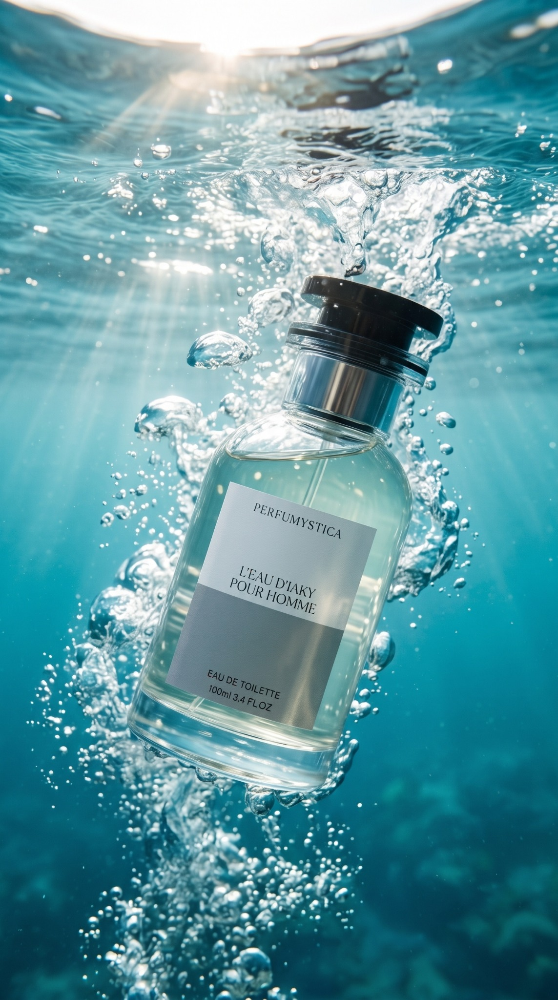
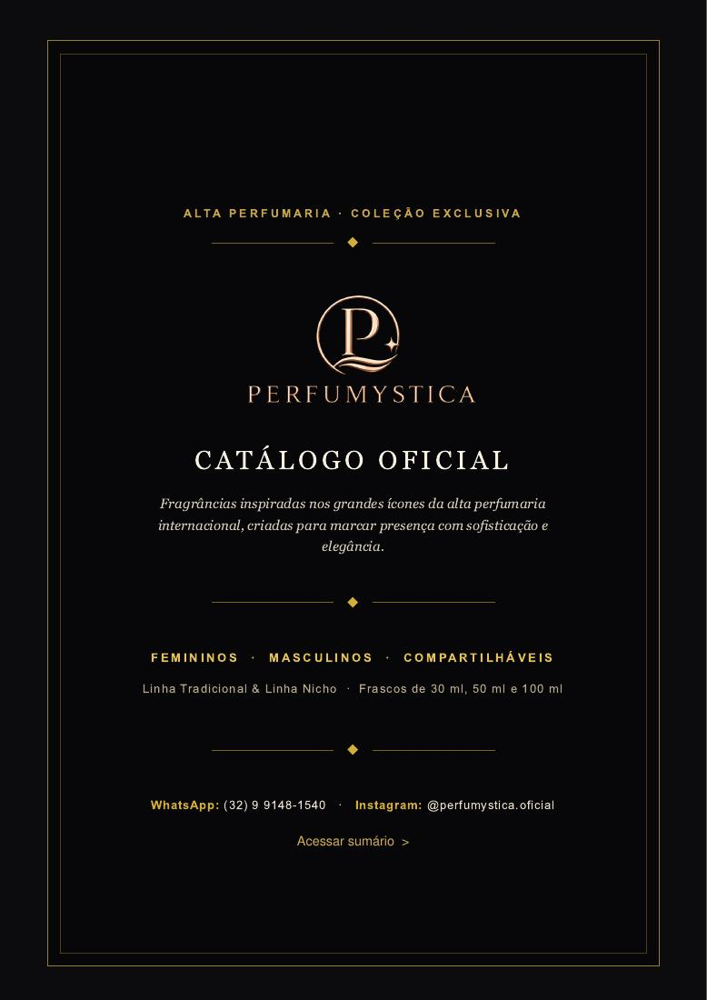
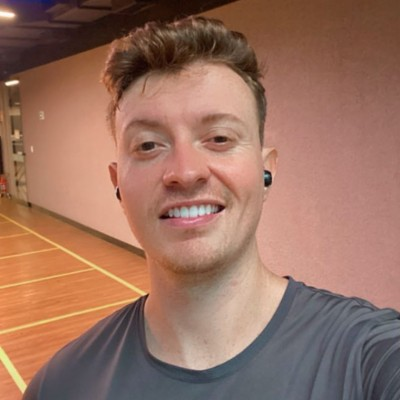

PROJECT 001 / PERFUMYSTICA
FEMME — Elegância em movimento
Uma narrativa de sofisticação e presença, com iluminação dourada, cenários elegantes e uma atmosfera de perfumaria de luxo.
MATEUS ALMEIDA — AI CREATIVE
PORTFÓLIO CRIATIVO · IA GENERATIVA
Transformo ideias em experiências visuais por meio de inteligência artificial, direção criativa, storytelling e design.

01 / TRABALHOS SELECIONADOS
Filmes publicitários, apresentações de produtos e design editorial.
PROJECT 001 / PERFUMYSTICA
Uma narrativa de sofisticação e presença, com iluminação dourada, cenários elegantes e uma atmosfera de perfumaria de luxo.
PROJECT 002 / PERFUMYSTICA
Uma experiência visual inspirada no mar: movimento, luz natural, frescor e uma linguagem cinematográfica envolvente.
PROJECT 003 / PERFUMYSTICA
Apresentação de produtos com iluminação dramática e composição visual centrada nos frascos.
PROJECT 004 / BY MARI MARRIE
Campanha de home spray com atmosfera acolhedora, luz suave e direção visual sensorial.

Abrir catálogo completo ↗PROJECT 005 / PERFUMYSTICA
Design editorial de 11 páginas, com apresentação de fragrâncias, acordes olfativos, preços e navegação por coleções.
02 / PROCESSO CRIATIVO
Definição da atmosfera, narrativa, sequência de cenas e identidade da campanha.
Criação e refinamento de instruções para gerar cenas audiovisuais com IA.
Seleção das melhores tomadas, identificação de inconsistências e ajustes criativos.
Montagem, ritmo, transições e integração de elementos sonoros para o filme final.
03 / SOBRE O CRIADOR

Sou Mateus Almeida, estudante de Sistemas de Informação e apaixonado por explorar as possibilidades da inteligência artificial na criação audiovisual.
Desenvolvo projetos de criação audiovisual e design, da concepção à finalização, explorando diferentes ferramentas de inteligência artificial.
Em evolução constante, com curiosidade, senso estético e vontade de aprender.
04 / VAMOS CONVERSAR
Aberto a oportunidades de criação audiovisual, projetos com IA generativa e colaboração criativa.